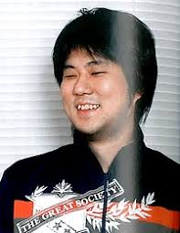

Eiichiro Oda, The creator of One Piece!

Eiichiro Oda (Japanese: 尾田 栄一郎 Hepburn: Oda Eiichirō, born January 1, 1975) is a Japanese manga artist, who is best known for his manga series One Piece (1997–present). With 440 million tankobon copies in circulation worldwide,[2] One Piece is the best-selling manga series of all time. The series' popularity resulted in his being named one of the manga artists that changed the history of manga.